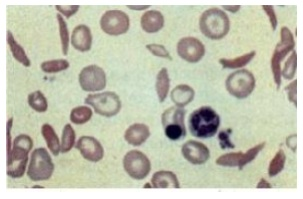
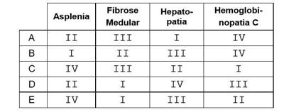
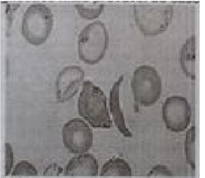
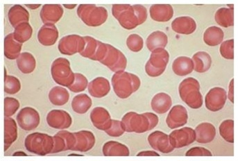
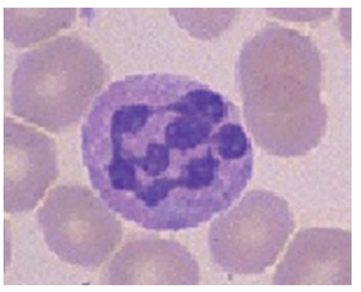
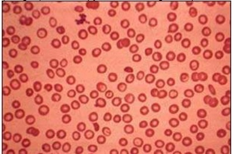

Questão 1 · Classif icação morf ológica das anemias · 4000185798São causas de anemia normocítica.
A Doença renal, doença crônica.
B Deficiência de ferro, lesão medular.
C Mielodisplasia, talassemia minor.
D Anemia sideroblástica, anemia hemolítica.
Questão 2 · Classif icação f uncional das anemias · 4000166564Paciente masculino, 38 anos de idade, procurou atendimento médico devido à astenia. Observado quadro de anemia com dosagem de reticulócitos alta. São causas possíveis da anemia desse paciente, exceto:
A Deficiência de G6PD.
B Deficiência de ferro.
C Esferocitose hereditária.
D Hiperesplenismo.
Questão 3 · Neutróf ilos hipersegmentados · 4000164916Homem, 50 anos, refere cansaço progressivo nos últimos 6 meses, contudo sem sintomas respiratórios. Exame físico: hipocorado. Hematócrito (Ht) = 45% há cerca de um ano. Exames laboratoriais recentes: Ht = 25%; reticulócitos = 4%; ferritina = 300µg/L. Exame do sangue periférico: macro ovalocitose; policromato lia e vários neutró los com seis segmentos ou mais. A hipótese diagnóstica mais provável é:
A hemólise intravascular
B anemia megaloblástica
C hemólise extravascular
D sangramento gastrointestinal oculto
Questão 4 · Os reticulócitos · 4000164043Homem de 45 anos apresenta histórico de cansaço, tonteiras e palidez das mucosas há algumas semanas. O exame físico não apresentou visceromegalias e o de laboratório evidenciou hemoglobina = 6g/dL, hematócrito = 18%, leucócitos = 9.000/mm³ com diferencial normal e plaquetas = 450.000/mm³. A dosagem de reticulócitos é de 2,5%, VCM = 67fL e CHCM = 28g/dL. Para esse paciente, a definição do tipo de anemia e a alteração principal mais prováveis, respectivamente, são:
A hiperproliferativa / destruição por membrana anormal da hemácia
B hipoproliferativa / defeito na formação da hemoglobina
C hiperproliferativa / destruição imune das hemácias
D hipoproliferativa / defeito na maturação nuclear
Questão 5 · Diagnóstico dif erencial das anemias microcíticas · Classif icação morf ológica das anemias · 4000144920O diagnóstico das anemias da infância é muito auxiliado pela correta interpretação dos índices hematimétricos, entre eles, o tamanho dos glóbulos vermelhos (VCM = volume corpuscular médio). Qual alternativa abaixo representa uma possível causa de anemia microcítica (VCM diminuído)?
A Anemia por deficiência de tiamina
B Anemia por deficiência de ferro
C Anemia diseritropoética congênita
D Anemia por deficiência de vitamina B12 ou de ácido fálico
E Medicamentos que interferem na eritropoese (p.ex., valproato, zidovudina, alguns imunossupressores)
Questão 6 · Classif icação morf ológica das anemias · 4000144615Anemias microcíticas/hipocrômicas podem estar associadas a:
A doença renal.
B deficiência crônica de ferro.
C invasão tumoral da medula óssea.
D fase inicial da deficiência de ferro.
Questão 7 · Classif icação morf ológica das anemias · 4000144077Causas de hematimetria que mostra VGM maior que 100, exceto
A Álcool.
B Deficiência de Vit B12.
C Excesso de ácido fólico.
D Hipotireoidismo.
E doença hepática.
Questão 8 · Classif icação morf ológica das anemias · 4000143945A morfologia da hemácia auxilia no diagnóstico diferencial das anemias. Assinale a alternativa em que ambas as anemias são hipocrômica e microcítica:
A Microesferocitose e Alfa Talassemia
B Anemia ferropriva e Beta Talassemia
C Talassemia Beta e Anemia falciforme
D Deficiência de G6PD e Anemia Ferropriva
E Microesferocitose e Deficiência de G6PD
Questão 9 · Quadro clínico da púrpura trombocitopênica trombótica PTT · Esquizócitos · 4000142637Mulher, 32 anos, em investigação de trombocitopenia de surgimento recente, associada à elevação de escórias nitrogenadas. Hemograma: leucometria e hemoglobina em níveis normais. A visualização de hemácias fragmentadas (esquizócitos) na lâmina de sangue periférico sugere a hipótese diagnóstica, mais provável, de:
A trombocitopenia pós infecciosa
B púrpura trombocitopênica trombótica
C leucemia mielocítica aguda
D trombocitopenia induzida por drogas
Questão 10 · Classif icação morf ológica das anemias · 4000140425São causas de anemia macrocítica:
A Cirurgia bariátrica, doença inflamatória intestinal e artrite reumatoide.
B Anemia perniciosa, cirurgia bariátrica e síndrome do intestino curto.
C Doença inflamatória intestinal, talassemia e anemia perniciosa.
D Síndrome do intestino curto, anemia falciforme, hábito vegetariano.
E Hábito vegetariano, talassemia, artrite reumatoide.
Questão 11 · Corpúsculos citoplasmáticos das hemácias · 4000134649Qual dos seguintes achados são característicos na hematoscopia de sangue periférico de um homem de 28 anos que foi esplenectomizado há 06 meses, após trauma abdominal fechado?
A Acantócitos.
B Hemácias em lágrima.
C Neutrófilos com hipogranulação.
D Hemácias com inclusões basofílicas.
E Hemácias em alvo.
Questão 12 · Quadro clínico da anemia megaloblástica · Def iciência de Vitamina B12 e Ácido Fólico · 4000125755Neutróf ilos hipersegmentados Mulher de 48 anos queixa-se de parestesias em mãos e pés há cerca de 4 meses. Tem diabetes mellitus há 5 anos, em uso de metformina e sangramento retal devido a hemorroida há 1 ano. Exames laboratoriais: Hb = 10,0 g/dL; VCM = 115 fL; leucócitos = 3.800/ mm³ ; segmentados = 1.600/ mm³; plaquetas = 120.000/ mm³ . Descrição do esfregaço sanguíneo: ausência de células imaturas e presença de pleocariócitos. A hipótese diagnóstica é
A deficiência de ácido fólico.
B anemia hemolítica.
C anemia de doença crônica.
D deficiência de vitamina B12.
E deficiência de ferro.
Questão 13 · Classif icação f uncional das anemias · 4000106314Das alternativas apresentadas abaixo qual apresenta exemplos de anemias hipoproliferativas?
A As desordens de membranas e as anemias microangiopáticas.
B As hemoglobinopatias, como a anemia falciforme.
C A ocupação medular por células anormais, as leucemias e as metástases.
D A hemoglobinúria paroxística noturna.
Questão 14 · Corpos de Heinz · Quadro clínico da def iciência de G6PD · 4000102302Paciente de 21 anos de idade, sexo masculino, apresenta quadro de celulite na coxa direita, iniciando o tratamento oral com trimetoprim-sulfametoxazol. Algumas horas depois, evolui com mal-estar, tontura, falta de ar, calafrios e lombalgia. Não há histórico de uso prévio de antibióticos. Exame físico: hipocorado (2+/4+), ictérico (1+/4+), eupneico e afebril. Exames séricos: hemoglobina: 9,1 g/dL, plaquetas: 330000/mm³, reticulócitos corrigidos: 15,8%; esfregaço de sangue periférico: presença de corpúsculos de Heinz. O diagnóstico mais provável é:
A deficiência de glicose-6-fosfato desidrogenase.
B desordem da membrana do eritrócito.
C hemólise autoimune.
D sepse por bactérias anaeróbias.
Questão 15 · Classif icação morf ológica das anemias · Classif icação das anemias Foco na f erropriva · 4000084350A anemia ferropriva, sob o ponto de vista siológico, é classificada como uma anemia decorrente da_______________e, considerando a classificação morfológica, é uma anemia_______________. Assinale a alternativa que preenche, correta e respectivamente, as lacunas do trecho acima.
A eritropoese inefetiva - macrocítica
B deficiência de produção - microcítica
C eritropoese inefetiva - microcítica
D deficiência de produção - macrocítica
Questão 16 · Os reticulócitos · 4000081821Você está investigando a causa da anemia de um paciente de 50 anos de idade, cuja avaliação de rotina mostrou hematrócrito de 25%. Há 1 ano, o hematócrito era de 47%. O volume corpuscular médio é de 80 (V.R.: 79 a 98 fL), a concentração de hemoglobina corpuscular média é 25 (V.R.: 32 a 36 g/dL), a hemoglobina corpuscular média é 25 (V.R.: 26,5 a 31 pg) e a contagem de reticulócitos é 5%(V.R.: 0,5 a 2,17%). A avaliação do esfregaço de sangue periférico mostra grande número de macrócitos policromató los. A dosagem de ferritina é de 340 ug/ml. Qual é a causa da anemia deste paciente?
A Defeito na proliferação de eritrócitos na medula óssea;
B Hemólise extravascular;
C Hemólise intravascular;
D Anemia por deficiência de ferro;
E Sangramento gastrintestinal;
Questão 17 · Corpos de HowellJolly · Corpos de Heinz · 4000072767Uma paciente recém-diagnosticada com leucemia de células pilosas e ainda não submetida a qualquer tratamento apresenta corpúsculos de Howell-Jolly, corpúsculos de Heinz, e hemácias nucleadas. Qual a interpretação destes achados?
A Infiltração esplênica difusa pelo tumor.
B Coagulação intravascular disseminada.
C Anemia hemolítica.
D Pancitopenia.
E Transformação para leucemia aguda.
Questão 18 · Classif icação f uncional das anemias · 4000039709A reticulocitose é um bom indicador de eritropoiese. Assim, a anemia que costuma cursar com reticulocitose é
A Anemia carencial ferropriva.
B Anemia por deficiência de vitamina B12.
C Esferocitose hereditária.
D Anemia de Blackfan-Diamond.
E Talassemia.
Questão 19 · Quadro clínico da anemia megaloblástica · Neutróf ilos hipersegmentados · 4000025920Paciente do sexo feminino, de 51 anos, queixa-se de cansaço e fraqueza há meses. O hemograma demonstra hemoglobina de 9.5 g/dL, hematócrito de 28.1%, VCM de 134 fL associado a reticulócitos baixos. O hematologista faz um esfregaço de sangue periférico e observa polimorfonucleados hipersegmentados com cerca de cinco a seis segmentações. O exame que mais contribuiria para o diagnóstico correto seria:
A dosagem de B12 e folato.
B biópsia da medula óssea.
C ferritina sérica.
D eletroforese de hemoglobina.
Questão 20 · Classif icação morf ológica das anemias · 4000024585Considerando os dados a seguir, referentes à anemia em adultos, relacione os tipos de anemia e as causas: Tipos de anemia: I - Microcítica; II - Normocítica; III - Macrocítica; Causas: ( ) Doenças crônicas; ( ) Deficiência de ferro; ( ) Deficiência de vitamina B12; ( ) Alcoolismo; ( ) Talassemias. A sequência correta é:
A II, I, III, III, I
B I, I, III, II, III
C I, II, II, I, III
D II, I, II, I, I
Questão 21 · Hemácias em alvo · 4000117754Foram avaliados esfregaços de sangue periférico de cinco pacientes. Em um deles chamou atenção grande quantidade de eritrócitos em alvo (leptócitos). Trata-se provavelmente do individuo com diagnóstico de
A Fibrose medular.
B Hemoglobinopatia C.
C Talassemia minor.
D Cirrose hepática criptogenética.
E Doença falciforme.
Questão 22 · Classif icação morf ológica das anemias · 4000108241É exemplo de anemia microcítica:
A Anemia por doença renal.
B Deficiência de folato.
C Anemia sideroblástica.
D Mielodisplasia.
Questão 23 · Corpos de Heinz · Quadro clínico da def iciência de G6PD · 4000101359A morfologia dos eritrócitos é de grande valor no diagnóstico das anemias. A presença de corpúsculos de Heinz nos eritrócitos indica
A Agente citotóxico.
B Acúmulo de glicogênio.
C Precipitação de hemoglobina anormal.
D Defeito no citoesqueleto celular.
Questão 24 · Quadro clínico da anemia f alcif orme · Drepanócitos · 4000101069Criança de 1 ano e 6 meses, é trazida pela mãe com histórico de choro freqüente em crises, sem fator desencadeante óbvio e melhora espontânea. Desde seu nascimento, vários episódios de "infecções", tratados sempre sob orientação médica e nos últimos15 dias amarelamento da pele e dos olhos, com duração de 5 dias e melhora espontânea. Foi solicitado um hemograma, e durante a análise foi visualizada a seguinte imagem: Diante do exposto, o achado na lâmina e a hipótese diagnóstica são:

A Presença de linfoblasto, hipótese diagnóstica de Leucemia Linfóide Aguda.
B Pesença de reticulocitose, hipótese diagnóstica de Anemia Hemolítica.
C Presença de poiquilocitose, hipótese diagnóstica de Anemia Falciforme.
D Presença de microcitose, hipótese diagnóstica de Anemia Ferropriva.
Questão 27 · Classif icação morf ológica das anemias · Anemias macrocíticas · 4000067820São causas de anemias macrocíticas:
A Anemias hemolíticas congênitas e anemia megaloblástica.
B Anemia sideroblástica e deficiência de ferro.
C Envenenamento por chumbo e síndromes talassêmicas.
D Anemia por deficiência de tiamina e síndrome mielodisplásica.
E Síndromes talassêmicas e anemia hemolítica adquirida.
Questão 28 · Diagnóstico dif erencial das anemias microcíticas · Classif icação morf ológica das anemias · 4000055997Em ambulatório de atenção básica você recebe paciente para investigação de anemia com per l microcítico. Considere a alternativa incorreta:
A A anemia ferropriva é a causa mais comum de anemia na população geral
B Talassemia minor é diagnóstico diferencial de anemia microcítica
C Anemia por deficiência de Vitamina B12 apresenta-se, em geral com macrocitose
D A avaliação de doenças crônicas e de perda sanguínea como hipermenorréia ou sintomas de sangramento digestivo são importantes na investigação etiológica das anemias
E Comprovando-se anemia ferropriva, a baixa ingesta de ferro, por exemplo, em dietas vegetarianas, é a principal etiologia
Questão 29 · Esf regaço do sangue perif érico · 4000052100Correlacione alterações encontradas no hemograma com a patologia: I. Hemácias em alvo; II. Hemácias em rouleaux; III. Esquizócitos; IV. Dacriócitos; a. Síndrome hemolítica urêmica; b. Hemoglobinopatia C; c. Mielofribose; d. Mieloma múltiplo;
A Id, IIc, IIIa e IVb
B Ib, IIc, IIIa e IVd
C Id, IIa, IIIc e IVb
D Ic, IId, IIIb e IVa
E Ib, IId, IIIa e IVc
Questão 30 · Quadro clínico da anemia megaloblástica · Def iciência de vitamina B12 · 4000048075Def iciência de Vitamina B12 e Ácido Fólico Izabel, 50 anos, com histórico prévio de cirurgia bariátrica (restritiva-disabsortiva) há 10 anos, sem seguimento regular. Encaminhada ao Pronto Socorro do Hospital Cajuru por anemia, com Hb de 6,5 g por dL e volume corpuscular médio de 120 . Além disso apresentava diminuição da série branca (2500 leucócitos por mm3) e das plaquetas (45.000 por mm3). Sorologias realizadas na admissão, incluindo pesquisa de HIV, negativas. Quadro recente relatado pelos familiares de piora cognitiva progressiva e desequilíbrio. Recebeu diagnóstico de Demência de Alzheimer há cerca de duas semanas, após avaliação em Unidade de Emergência, tendo iniciado Memantina, com pouca resposta. De acordo com o caso clínico, a alteração observada no esfregaço do hemograma que poderia colaborar para o diagnóstico é a presença de:
A neutrófilos multisegmentados.
B bastonetes de Auer.
C corpúsculos de Howell-Jolly.
D corpúsculos de Dohle.
E granulações tóxicas.
Questão 31 · Diagnóstico dif erencial das anemias microcíticas · 4000045280Em relação às anemias microcíticas e hipocrômicas é correto afirmar que:
A a causa mais comum é deficiência de vitamina B12.
B devem ser tratadas com cianocobalamina.
C devem ser investigadas com mielograma.
D os principais diagnósticos diferenciais são anemia ferropriva, talassemia e anemia de doença crônica.
E os reticulócitos geralmente estão aumentados por ser tratar de anemia hiperproliferativa.
Questão 32 · Classif icação f uncional das anemias · 4000069849Paciente de 42 anos, em investigação diagnóstica de anemia grave (hemoglobina = 7g/dL; hematócrito = 20%), recebe contagem de reticulócitos inicial compatível com 4,8% de reticulócitos. Diante desse padrão de comportamento da medula óssea, a condição que pode ser incluída entre as causas possíveis de anemia, nesse caso, é:
A Anemia ferropriva.
B Deficiência de G6PD.
C Anemia hemolítica autoimune.
D Púrpura trombótico-trombocitopênica.
Questão 33 · Diagnóstico dif erencial das anemias microcíticas · Classif icação morf ológica das anemias · 4000062086São causas de microcitose e hipocromia no exame de esfregaço sanguíneo:
A deficiência de ferro, mieloma múltiplo, uso de fenitoína
B hemólise intravascular, mielodisplasia, hipertireoidismo
C anemia da inflamação, talassemia, anemia sideroblástica
D insuficiência renal, leucemia mieloide crônica, hepatite crônica
Questão 34 · Quadro clínico da anemia megaloblástica · Neutróf ilos hipersegmentados · 4000062047Mulher de 28 anos de idade, previamente hígida, está em investigação de fadiga progressiva há 7 meses. O resultado do seu hemograma foi: hemoglobina 8 g/dL; VCM 106 fL; leucócitos 4.200 cels/mm³ (0/2/0/0/4/53/26/15), plaquetas 240.000 cels/mm³ . O esfregaço sanguíneo revelou macrocitose, anisocitose, poiquilocitose e hipersegmentação de neutró los. O melhor exame a ser solicitado para elucidar a causa da anemia é o de:
A ferritina
B vitamina B12
C teste de Coombs
D aspirado de medula
Questão 35 · Classif icação morf ológica das anemias · 4000127446São causas de anemia normocrômica normocítica, hipocrômica microcítica e normocrômica macrocítica, respectivamente:
A Anemia aplástica, anemia sideroblástica, anemia megaloblástica.
B Anemia da insuficiência renal crônica, anemia hemolítica, anemia do hipotiroidismo.
C Anemia induzida por fármacos, anemia sideroblástica, anemia ferropriva.
D Talassemia, anemia de doença crônica, anemia megaloblástica.
E Anemia ferropriva, anemia hemolítica, talassemia.
Questão 36 · Os reticulócitos · 4000115926Das anemias abaixo, aquela que tipicamente apresenta-se com normocitose e elevada contagem de reticulócitos é a
A anemia ferropriva.
B anemia de doença crônica.
C síndrome hemofagocítica.
D anemia por deficiência de folato.
E deficiência de G6PD.
Questão 37 · Def inição de anemias · 4000108540Assinale a alternativa CORRETA. Segundo a Organização Mundial da Saúde, para as crianças de 5 a 11 anos de idade, define-se anemia valores de hemoglobina menor que:
A 11,5 g/dl (gramas por decilitro)
B 12 g/dl (gramas por decilitro)
C 12,5 g/dl (gramas por decilitro)
D 13 g/dl (gramas por decilitro)
Questão 38 · Testes de Coombs · Classif icação morf ológica das anemias · 4000105067Paciente feminina, de 19 anos, apresenta-se com sintomas de cansaço há 01 mês. Ao exame físico, encontra-se pálida. Nos exames solicitados, apresentava: Hb = 7,2 g/dl (valores normais [VN]: 12 - 16g/dl); VCM = 110 (VN: 80 - 100); HCM = 33 (VN: 30 - 34); leucócitos = 6.200 com diferencial normal (VN: 5.000 - 10.000); plaquetas= 165.000 (VN:150.000 - 400.000); DHL elevado com Coombs direto positivo; saturação de transferrina, dosagens de B12 e folato normais. Com base na história anterior, responda à questão: Qual o diagnóstico da paciente?
A Anemia microcítica hipocrômica.
B Anemia normocítica e normocrômica.
C Anemia macrocítica.
D Existem duas afirmativas corretas.
E Nenhuma das anteriores.
Questão 39 · Corpos de Heinz · Quadro clínico da def iciência de G6PD · 4000086801Lactente, seis meses, masculino, é medicado com sulfametoxazol + trimetoprima por apresentar doença febril. Após 36 horas, apresenta icterícia, queda da hemoglobina e presença de corpúsculos de Heinz no esfregaço periférico. Sua mãe refere que, no teste do pezinho, havia uma alteração, mas não sabe ao certo qual era. Pode-se a rmar que a causa da lesão da membrana celular nesta doença é a:
A Ruptura da molécula da hemoglobina devido à ausência de substâncias reduzidas.
B Alteração na síntese da hemoglobina pela presença de compostos oxidantes.
C Precipitação da hemoglobina pela perda da proteção contra agentes oxidantes.
D Perda de um grupo heme da hemoglobina pela presença de agentes reduzidos.
Questão 40 · Corpos de Heinz · 4000084875A morfologia dos eritrócitos é de grande valor no diagnóstico das anemias. A presença de corpúsculos de Heinz nos eritrócitos indica:
A Agente citotóxico.
B Acúmulo de glicogênio.
C Precipitação de hemoglobina anormal.
D Defeito no citoesqueleto celular.
E Defeito mitocondrial.
Questão 41 · Anemia perniciosa · Neutróf ilos hipersegmentados · 4000081346Paciente F.R.L., feminina, 75 anos de idade, realizou alguns exames que revelaram hematócrito de 21%, VCM de 115 , macrovalócitos e plurissegmentação de neutró los à hematoscopia. A EDA mostrou acentuada atro a de mucosa em corpo e fundo gástricos. Outras anormalidades podem ser esperadas nesta paciente, com a EXCEÇÃO de:
A LDH alta.
B Leucopenia.
C Gastrina baixa.
D Plaquetopenia.
E Homocisteína elevada.
Questão 42 · Leucemias agudas · Hemograma · Introdução às leucemias · 4000058727Sobre as alterações descritas em um hemograma, assinale a alternativa INCORRETA:
A Na presença de blastos, deve-se suspeitar de leucemia aguda.
B Na presença de linfócitos atípicos, deve-se suspeitar de leucemia aguda.
C Neutrófilos hipersegmentados estão presentes nas anemias megaloblásticas
D Hemácias em rouleaux podem ser encontradas em pacientes com micloma múltiplo
E O corpúsculo de Howell- Jolly está presente nas hemácias de pacientes pós esplenectomia
Questão 43 · Introdução à anemia f alcif orme · Esf regaço do sangue perif érico · 4000007567Paciente apresenta ao exame do esfregaço periférico do sangue presença de hemácias em forma de foice. Qual é a hipótese diagnóstica nesse caso?
A Talassemia.
B Eliptocitose.
C Deficiência de G6PD.
D Esferocitose.
E Drepanocitose.
Questão 44 · Esf regaço do sangue perif érico · 4000121889Considere as seguintes alterações eritrocitárias: I. Hemácias em gota ou dacriócitos; II. Hemácias em alvo ou leptócitos; III. Acantócitos; IV. Corpúsculos de Howell-Jolly. A CORRETA relação entre as alterações eritrocitárias e distúrbios clínicos é:

A (VER IMAGEM).
B (VER IMAGEM).
C (VER IMAGEM).
D (VER IMAGEM).
E (VER IMAGEM).
Questão 45 · Classif icação morf ológica das anemias · Anemias macrocíticas · 4000116646Qual das situações abaixo comumente NÃO é causa de anemia com VCM > 100 fl?
A Abuso de álcool.
B Mielodisplasia.
C Hipotireoidismo.
D Anemia sideroblástica.
Questão 46 · Quadro clínico da anemia megaloblástica · Neutróf ilos hipersegmentados · 4000114536Mulher, 65 anos, portadora de hipotireoidismo por tireoidite de Hashimoto, em uso regular de levotiroxina 150 mcg/dia, com quadro de adinamia progressiva com palidez cutâneo-mucosa ao exame. Ausência de hepatoesplenomegalia ou linfadenopatia. Negava sangramentos. Hemograma evidenciou hemácias de 2.200.000/mm³; hemoglobina de 7,2 g/dl; hematócrito de 36%; leucócitos de 2.200/mm³ e plaquetas de 98.000/mm³. Contagem de reticulócitos de 20.000/mm³. TSH e T4 livre normais. DHL = 1.220 UI/L e bilirrubina indireta de 1,9 mg/dl. Considerando os aspectos descritos, o achado mais provável na hematoscopia desta paciente será:
A Células em lágrima.
B Esquizócitos.
C Neutrófilos hiperlobulados.
D Blastos com bastonetes de Auer.
E Corpos de Howell-Jolly.
Questão 47 · Os reticulócitos · 4000086411Um paciente com palidez e icterícia, que tem ao exame laboratorial: Hb = 9%, reticulócitos > 2, aumento sérico de bilirrubina indireta e bilirrubina direta normal e DHL aumentada, deve ser classificado com anemia:
A Falciforme.
B Hemolítica.
C Sideroblástica.
D Mielodisplásica.
E Megaloblástica.
Questão 48 · Anemias hipoprolif erativas · 4000070945As causas de anemias podem ser diferenciadas em dois grandes grupos de acordo com os mecanismos que dão origem a elas, podendo ser divididas em hipoproliferativas ou hiperproliferativas. Assinale abaixo a assertiva que contém uma causa de anemia hipoproliferativa.
A Esferocitose hereditária.
B Anemia carencial.
C Hiperesplenismo.
D Sangramento agudo evidente.
Questão 49 · Diagnóstico dif erencial das anemias microcíticas · Classif icação morf ológica das anemias · 4000060073Paulo, 35 anos, apresenta quadro clínico de anemia. O esfregaço sanguíneo revelou hemácias microcíticas e hipocrômicas. Qual das alternativas abaixo demonstra o mecanismo da anemia?
A Índices hematimétricos, VCM, HCM, CHCM.
B Contagem de reticulócitos.
C Dosagem da ferritina.
D Dosagem da vitamina B12.
E Pesquisa do Coombs direto.
Questão 50 · Classif icação f uncional das anemias · 4000041363Sobre anemias, marque a alternativa INCORRETA.
A AHAI é considerada hipoproliferativa.
B Anemia ferropriva é um exemplo de anemia hipoproliferativa.
C Anemia megaloblástica é um exemplo de anemia hipoproliferativa.
D Na aplasia medular, a medula óssea é substituída por gordura.
E As anemias microangiopáticas se caracterizam normalmente por esquizócitos no sangue periférico.
Questão 51 · Corpos de HowellJolly · 4000017803Esfregaço periférico de uma mulher de 40 anos revelou a presença de corpos de Howell − Jolly nos eritrócitos. Dos abaixo, o mais provável é haver:
A Presença de hemoglobina C à eletroforese de hemoglobina.
B Presença concomitante de esquizócitos.
C Antecedente de esplenectomia.
D Deficiência de G6PD.
E Teste de Coombs positivo.
Questão 52 · Anemia perniciosa · Quadro clínico da anemia megaloblástica · Neutróf ilos hipersegmentados · 4000013566Mulher com 76 anos foi admitida na enfermaria com história de um ano de parestesias em membros inferiores. A um mês da internação parou de deambular. No laboratório, apresentava Hb: 8,4 g/dL, VCM: 110 , hipersegmentação de neutró los e presença de anticorpos anticélulas parietais, o diagnóstico aponta para:
A Anemia perniciosa.
B Anemia por deficiência de ácido fólico.
C Síndrome mielodisplásica.
D Anemia hemolítica autoimune.
E Hemoglobinúria paroxística noturna.
Questão 53 · Classif icação morf ológica das anemias · 4000009975A morfologia da hemácia auxilia no diagnóstico diferencial das anemias. Assinale a alternativa em que ambas as anemias são hipocrômicas e microcíticas:
A Microesferocitose e alfatalassemia.
B Anemia ferropriva e betatalassemia.
C Talassemia beta e anemia falciforme.
D Deficiência de G6PD e anemia ferropriva.
E Microesferocitose e deficiência de G6PD.
Questão 54 · Classif icação morf ológica das anemias · 4000121662Diante de um paciente com anemia normocítica e normocrômica, a primeira consideração é tratar-se de:
A Anemia associada a medicamentos.
B Deficiência combinada de ferro e folato.
C Talassemia.
D Anemia de doença crônica.
E Deficiência de cobalamina.
Questão 55 · Quadro clínico da anemia megaloblástica · Gastrectomias · Neutróf ilos hipersegmentados · 4000098143Mulher, 35 anos, G3P2(C2)A0, idade gestacional = 29 semanas. Refere antecedente de cirurgia bariátrica há 14 meses. Faz pré-natal regularmente, com tratamento para anemia com sulfato ferroso (800 mg/dia) desde a 16ª semana. Exames laboratoriais na 28ª semana de gestação: Hb = 10,5 g/dl; VCM = 110 ; leucócitos = 3.200/mm³, com presença de neutrófilos hipersegmentados; plaquetas = 150.000/mm³. A causa da anemia é:
A Deficiência de cobalamina.
B Deficiência de tiamina.
C Deficiência definiacina.
D Deficiência de piridoxina.
Questão 56 · Introdução à hemólise · Classif icação f uncional das anemias · 4000089005Menina de 12 meses, alimentada exclusivamente com leite arti cial, tem um exame clínico com palidez acentuada. A avaliação laboratorial mostra uma hemoglobina de 7,0 g/dL, um hematócrito de 25%, aumento significativo de reticulócitos e desidrogenase lática. Qual das propostas abaixo é o diagnóstico mais provável?
A Anemia devido à deficiência de proteína
B Anemia por deficiência de ferro.
C Anemia devido à deficiência de Vit B12.
D Anemia causada por deficiência de ácido fólico.
E Anemia hemolítica.
Questão 57 · Diagnóstico dif erencial das anemias microcíticas · Talassemias · VCM volume corpuscular médio · 4000079112Mulher de 30 anos comparece ao seu consultório para um check-up, sem queixas espontâneas significativas. O seu hemograma tem o seguinte resultado: Hemácias 6,5 milhões/mm³; Hemoglobina 9,2g/dl; Hematócrito 42,3%; RDW 14,1%. Qual das seguintes alternativas é mais consentânea com estes achados?
A Este quadro é impossível.
B Trata-se de anemia macrocítica.
C Os dados são todos perfeitos para o diagnóstico de anemia ferropriva.
D Há indicação para hemotransfusão.
E É provavelmente o defeito genético mais comum do mundo.
Questão 58 · Anemias hipoprolif erativas · 4000076991O residente avalia o hemograma de paciente de 72 anos no ambulatório, cujos dados mais importantes são: hemoglobina = 8,2 g/dl; reticulócitos = 0,6%; leucócitos = 8.500/dl; plaquetas = 180.000/dl. As doenças que melhor se enquadrariam, nesses dados, são:
A Deficiência de ferro e anemia hemolítica por anticorpos a frio.
B Aplasia de medula óssea e anemia microangiopática.
C Deficiência de vitamina B12 e mielofibrose.
D Esferocitose e insuficiência renal crônica.
Questão 59 · Classif icações das anemias · 4000069537Os principias exames laboratoriais indicados para a investigação inicial das anemias são:
A Hemograma e VHS.
B Hemograma e reticulócitos.
C Reticulócitos e curva de fragilidade osmótica.
D Hemograma e eletroforese de hemoglobina.
Questão 60 · Classif icação morf ológica das anemias · VCM volume corpuscular médio · 4000068636Microcitose caracteriza-se pelo achado de valores abaixo do normal de:
A Hematócrito.
B Volume corpuscular médio.
C Concentração de hemoglobina.
D Hemoglobina corpuscular média.
Questão 61 · Os reticulócitos · 4000066650São causas de anemia com reticulocitopenia, exceto:
A Mielodisplasia.
B Deficiência de vitamina B12.
C Anemia ferropriva.
D Anemia sideroblastica.
E Esferocitose hereditária.
Questão 62 · Def inição de anemias · 4000041174A anemia é uma afecção que acomete boa parte da população, em diversas etapas da vida e por diferentes motivos. Sobre esse assunto é correto afirmar que:
A O diagnóstico de anemia é feito quando os valores de hemoglobina estão abaixo de12 g/dl em todos os grupos etários, independente de sexo e de gravidez.
B Pode-se afirmar que as principais causas de anemia macrocítica são hemorragias e deficiência de folato.
C Anemia microcítica tem como principais causas a deficiência de ferro e hemoglobinopatias.
D Oxigenioterapia hiperbárica é opção de tratamento de anemia apenas em crianças.
E Quando diagnosticado anemia, não há necessidade de investigação das outras series hematológicas, visto que isso não interferirá no tratamento.
Questão 63 · Hemograma · 4000037786Paciente do sexo feminino, de 40 anos, sem nenhuma patologia de base, realiza um hemograma para uma consulta de rotina e o resultado é o seguinte: Hb 11, Ht 30, Leucócitos 2.500 ( não foi liberado o diferencial) e plaquetas 128.000. Os termos adequados para as alterações laboratoriais apresentadas por essa paciente são:
A Anemia, leucopenia e plaquetose.
B Poliglobulia, leucopenia e plaquetose.
C Poliglobulia, leucopenia e plaquetopenia.
D Anemia, leucopenia e plaquetopenia.
Questão 64 · Corpos de HowellJolly · 4000034649Vítima de trauma abdominal, com rotura esplênica há 45 dias, comparece a ambulatório de clínica médica para seguimento de quadro de síndrome metabólica. A presença de corpúsculos de Howell-Jolly, no hemograma trazido pela paciente, permite afirmar que:
A O paciente tem baço acessório ou não foi esplenectomizado.
B Trata-se de deficiência de G6PD em paciente esplenectomizado.
C O paciente tem deficiência de G6PD.
D Houve esplenectomia, e não há baço acessório.
E Certamente não houve esplenectomia.
Questão 65 · Corpos de HowellJolly · 4000002631Paciente do sexo masculino, 35 anos, com antecedente de Anemia Falciforme, apresenta no esfregaço de sangue periférico corpúsculos de Howell-Jolly. Assinale abaixo o significado desse achado.
A Crise de falcização.
B Processo infeccioso viral.
C Hipoesplenismo.
D Deficiência de folato.
Questão 66 · Quadro clínico da anemia f alcif orme · Drepanócitos · 4000108554Jovem de 19 anos é admitido com quadro febril e dores articulares. Realiza hemograma que revela Hb: 9,2 g/dl; Htc: 27%; leucócitos 12.500/mm³ e plaquetas 210.000/mm³, com a lâmina do esfregaço do sangue periférico apresentada abaixo. (VER IMAGEM) O diagnóstico mais provável do caso é:

A malária.
B leucemia aguda.
C anemia falciforme.
D dengue.
Questão 67 · Diagnóstico dif erencial das anemias microcíticas · Classif icação morf ológica das anemias · 4000106612Qual das opções abaixo aponta uma forma de anemia a ser considerada no diagnóstico diferencial das anemias microcíticas?
A Anemia aplásica.
B Anemia megaloblástica.
C Anemia hemolítica autoimune.
D Anemia sideroblástica.
Questão 68 · Rouleaux · 4000093314Analise a foto a seguir, que apresenta um esfregaço de sangue periférico. (VER IMAGEM) Qual a alteração encontrada e seu provável significado clínico?

A Hipocromia - Ferropenia.
B Rouleaux - Hipergamaglobulinemia.
C Esferocitose - Esferocitose hereditária.
D Aglutinação - Infecção por Mycoplasma.
E Macrocitose - Deficiência de B12.
Questão 69 · Corpos de Heinz · Fatores desencadeantes · 4000089998Paciente do sexo masculino apresenta episódio de hemólise. Obseva-se a presença de corpos de Heinz no sangue periférico. O paciente está em uso de dapsona. Assinale a alternativa diagnóstica mais provável:
A Anemia falciforme.
B Deficiência de glicose-6-fosfato desidrogenase.
C Esferocitose hereditária.
D Lupus eritematoso sistêmico.
E Deficiência de ácido fólico.
Questão 70 · Diagnóstico dif erencial das anemias microcíticas · Classif icação morf ológica das anemias · 4000083033Dois internos analisam o hemograma de uma paciente de 32 anos, antes de avaliar a sua história e exame físico. Hemácias 4,2 M/µl, hematócrito 28%, hemoglobina 9,2 g/dl, concentração de hemoglobina corpuscular média 20,9/dl, volume globular médio 72 , hemoglobina corpuscular média 26 pg. A anemia apresentada tende a diminuir, mais provavelmente, a partir da administração de:
A ferro.
B ácido fólico.
C vitamina B6.
D vitamina B12.
Questão 71 · Classif icação morf ológica das anemias · Anemias macrocíticas · 4000060075Em relação às síndromes anêmicas, ao observarmos volume corpuscular médio alto, devemos considerar como causa possível?
A Doença crônica.
B Deficiência de ferro.
C Talassemia.
D Deficiência de folato.
E Intoxicação por chumbo.
Questão 72 · Fisiopatologia e apresentação da betatalassemia · Diagnóstico da anemia de doença crônica · 4000123693Classif icação morf ológica das anemias Considere três pacientes com anemia, além das características abaixo. Paciente I - TSH superior a 30 mcU/ml. Paciente II - poliartrite crônica em mãos e rigidez matinal. Paciente III - eletroforese de hemoglobina com HbA2 superior a 4%. Anemias microcítica, normocítica e macrocítica serão encontradas com maior probabilidade, respectivamente, nos pacientes:
A I, III e II.
B III, I e II.
C I, II e III.
D III, II e I.
E II, III e I.
Questão 73 · Classif icação morf ológica das anemias · Quadro clínico da anemia de doença crônica · 4000101794Paciente do sexo feminino, 35 anos, portadora de Lúpus Eritematoso Sistêmico, apresenta anemia ao hemograma, descartada a possibilidade de hemólise. O Médico atribuiu a alteração como resultado da inflamação crônica. Assinale abaixo o volume corpuscular médio mais provável neste caso.
A 60 a 80 fl.
B 70 a 90 fl.
C 80 a 100 fl.
D 90 a 110 fl.
Questão 74 · Classif icação f uncional das anemias · 4000099178Na classificação de anemias, podemos definir como diminuição na produção de hemácias, as seguintes situações, com EXCEÇÃO de:
A Anemia aplásica.
B Deficiência de vitamina B12.
C Deficiência de ferro.
D Anemia hemolítica autoimune.
E Síndrome mielodisplásica.
Questão 75 · Classif icação morf ológica das anemias · 4000096843Quais das alternativas abaixo reúnem o conjunto de doenças que se manifestam, respectivamente, por anemia hipocrômica e microcítica; anemia normocrômica e normocítica e anemia normocrônica macrocítica?
A talassemia, hipotiroidismo, anemia sideroblástica.
B doença celíaca, anemia aplástica, deficiência de ácido fólico.
C anemia ferropriva, deficiência de vitamina B12, insuficiência renal crônica.
D doença hepática crônica, anemia ferropriva, gastrectomia.
Questão 76 · Classif icação morf ológica das anemias · VCM volume corpuscular médio · 4000062253Microcitose caracteriza-se pelo achado de valores abaixo do normal de:
A hematócrito;
B volume corpuscular médio;
C concentração de hemoglobina;
D ferritina;
E hemoglobina corpuscular média.
Questão 77 · Esf regaço do sangue perif érico · 4000040401A hematoscopia é parte da avaliação do hemograma. Permite observar tamanho e características morfológicas das hemácias, plaquetas e leucócitos, bem como presença e características de células anormais. Algumas alterações são frequentemente encontradas em determinadas doenças ou processos patológicos. Abaixo estão relacionadas algumas dessas associações. Qual delas está ERRADA?
A Corpos de Howell-Jolly e hipofunção ou ausência do baço.
B Eritrócitos grandes e ovalados e anemia megaloblástica.
C Esferócitos e anemia hemolítica autoimune.
D Neutrófilos hipersegmentados e infecção.
Questão 78 · Anemia perniciosa · Quadro clínico da anemia megaloblástica · Neutróf ilos hipersegmentados · 4000119075Homem, 48 anos de idade, solteiro, advogado, procura atendimento médico com queixa de fraqueza e falta de ar progressivas há 3 meses. Nas últimas quatro semanas, também notou edema de membros inferiores e palpitações. O exame físico mostrou que o paciente estava bastante descorado e levemente ictérico com parestesia em mãos e pés. A pressão arterial era de 115 x 70 mmHg e o pulso de 94 bpm. O hemograma revelou hemoglobina de 4,4 g/dl, volume corpuscular médio de 117 , glóbulos brancos de 2.900/ml com 500 neutró los/ml e 2.400 linfócitos/ml, com linfócitos atípicos, 52.000 plaquetas/ml e reticulócitos de 0,3%. No esfregaço do sangue periférico, foram vistas células como abaixo: O diagnóstico mais provável é:

A leucemia linfoide aguda.
B anemia ferropriva.
C leucemia mieloide aguda.
D anemia perniciosa.
Questão 79 · Diagnóstico dif erencial das anemias microcíticas · Classif icação morf ológica das anemias · 4000063289São causas de anemia microcítica:
A deficiência de ferro, carência de ácido fólico e mielodisplasia.
B talassemia, deficiência de ferro e mielodisplasia.
C talassemia, anemia da doença crônica e deficiência de vitamina B12.
D deficiência de ferro, mielodisplasia e deficiência de cobalamina.
E carência de ácido fólico, talassemia e hiperesplenismo.
Questão 80 · Def inição das síndromes talassêmicas · Hemácias em alvo · 4000034516Ref ratariedade ao tratamento da anemia f erropriva Um jovem com o diagnóstico de anemia supostamente ferropriva não obteve resposta após o uso, por tempo prolongado, de sulfato ferroso. Com base nessa informação e na morfologia das hemácias, (VER IMAGEM) dentre as opções abaixo, o diagnóstico provável é:

A Anemia hemolítica microangiopática.
B Deficiência de ácido fólico.
C Drepanocitose.
D Talassemia ("anemia do Mediterrâneo").
Questão 81 · Quadro clínico da anemia megaloblástica · Neutróf ilos hipersegmentados · 4000033508Gestante de 30 anos, diagnóstico prévio de doença de Crohn, gravidez de 20 semanas, com queixa de perda de apetite, náuseas e vômitos frequentes. Resultado do hemograma: Hb 9,9 g/dL; VCM 100 fL (Fentolitro); leucócitos globais 3.500/mm³, neutrófilos com núcleos hiper segmentados. O diagnóstico mais provável é:
A Anemia aplástica.
B Anemia ferropriva.
C Anemia hemolítica.
D Anemia perniciosa.
Questão 82 · Classif icação f uncional das anemias · 4000018262O achado de reticulocitose é frequentemente associado a, exceto:
A Anemias hemolíticas crônicas.
B Após hemorragias agudas.
C No início da reposição de ferro em pacientes com anemia ferropriva.
D Na anemia aplásica.
E Durante o tratamento das anemias megaloblásticas.
Questão 83 · Anemias na gestação · Def inição de anemias · Sistema cardiovascular e hematopoiético · 4000008710Conceito de anemia na gestação, segundo a OMS (Organização Mundial de Saúde):
A Hemoglobina igual ou abaixo de 11 g/dL.
B Hemoglobina igual ou abaixo de 12 g/dL.
C Hemoglobina igual ou abaixo de 10 g/dL.
D Hemoglobina igual ou abaixo de 9,5 g/dL.
E Hemoglobina igual ou abaixo de 10,5 g/dL.
Questão 84 · Esf regaço do sangue perif érico · Anemias Microangiopáticas · 4000101899Assinale a alternativa correta entre a associação de achado hematoscópico com o respectivo significado clínico:
A Formação de Rouleaux; infecção crônica.
B Esquizócitos; anemia hemolítica microangiopática.
C Hipossegmentação nuclear leucocitária; anemia megaloblástica.
D Granulações tóxicas neutrofílicas; saturnismo.
E Mieloblastos; leucemia linfoblástica aguda.
Questão 85 · Classif icação morf ológica das anemias · 4000035687Na avaliação inicial diagnóstica de paciente com Anemia e contagem de reticulócitos não elevada, devemos considerar no diagnóstico diferencial o valor do Volume Corpuscular Médio (VCM) ou volume celular. Assinale a alternativa CORRETA:
A Se o VCM é normal, o paciente pode ter aplasia da medula óssea.
B Se o VCM é baixo, o paciente pode ter deficiência de vitamina B12.
C Se o VCM é baixo, o paciente pode ter deficiência de folato.
D Se o VCM é alto, o paciente pode ter deficiência de ferro.
E Se o VCM é alto, o paciente pode ter traço talassêmico.
Questão 86 · Quadro clínico da anemia megaloblástica · Neutróf ilos hipersegmentados · 4000118612Em um paciente portador de anemia com VCM = 114 fL a presença de neutró los hipersegmentados aponta para o diagnóstico de anemia
A da doença crônica.
B por deficiência de vitamina B12 e/ou de folato.
C por deficiência de vitamina B12 apenas.
D por deficiência de folato apenas.
E por mielodisplasia.
Questão 87 · Classif icação morf ológica das anemias · Classif icação f uncional das anemias · 4000092583RDW red cell distribution width Associe as alterações laboratoriais (coluna 1) às situações clínicas em que ocorrem (coluna 2). COLUNA 1 1 - VCM baixo, RDW elevado, reticulócitos corrigidos < 2%. 2 - VCM baixo, RDW normal, reticulócitos corrigidos ≥ 2%. 3 - VCM normal ou baixo, RDW normal, reticulócitos corrigidos < 2%. 4 - VCM elevado, RDW elevado, reticulócitos corrigidos < 2%. 5- VCM elevado, RDW elevado, reticulócitos corrigidos ≥ 2%. COLUNA 2 ( ) paciente com anemia e Coombs direto positivo, icterícia e esplenomegalia. ( ) paciente com pancitopenia e gastrite atrófica. ( ) paciente com anemia hereditária e hemoglobina A2 aumentada. A sequência numérica correta, de cima para baixo, da coluna 2, é:
A 2 - 4 - 5
B 4 - 1 - 3
C 4 - 5 - 2
D 5 - 1 - 3
E 5 - 4 - 2
Questão 88 · Diagnóstico da anemia f erropriva · Classif icação morf ológica das anemias · 4000063996A anemia por deficiência de ferro caracteriza-se por ser:
A Hipocrômica e macrocítica.
B Normocrômica e macrocítica.
C Hipocrômica e microcítica.
D Normocrômica e normocítica.
E Normocrômica e microcítica.
Questão 89 · Anemia perniciosa · Os reticulócitos · 4000091859Qual o provável diagnóstico para homem, 47 anos, em investigação de anemia que apresente reticulócitos diminuídos e volume corpuscular médio elevado?
A Talassemia.
B Esferocitose.
C Anemia perniciosa.
D Anemia hemolítica autoimune.
E Deficiência de G6PD.
Questão 90 · Anormalidades de tamanho das hemácias · Causas de anemia megaloblástica · 4000057666Neutróf ilos hipersegmentados Para um paciente cujo esfregaço de sangue periférico apresente macrocitose e hipersegmentação de neutró los, qual das condições abaixo não deve ser considerada? Respostas: 1 12 23 34 45 56 67 78 89
A Uso crônico de bloqueador de bomba protônica.
B História prévia de cirurgia bariátrica.
C Doença de Crohn.
D Intoxicação por chumbo.